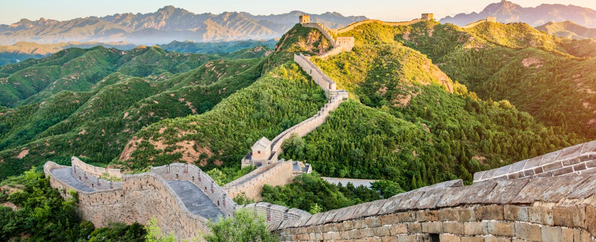

Grande Muralha da China

A Grande Muralha da China é uma das maiores obras de engenharia já construídas pelo ser humano. Sua construção começou há mais de dois mil anos e teve como principal objetivo proteger o território chinês contra invasões. Atualmente, a muralha possui mais de 21 mil quilômetros de extensão, atravessando montanhas, planícies e desertos.